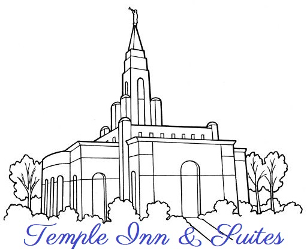

Site Name
The name for this website is:
Temple Inn & Suites
The proposed domain is:
templeinnandsuites.com
Temple visitors will need a comfortable place to rest while they do ordinance work.
The Temple Inn & Suites website will attract temple workers, youth groups, and travel-weary patrons.
They will find the comfort they need while visiting the temple.
The Temple Inn & Suites hotel chain has locations throughout the world, which will be featured on the website.
The website will display the various accommodations that cater to both large and small groups.
Family and friends who are participating in weddings and sealings will search out this website.
The convenience of having a deluxe hotel near the temple locations will be a blessing for young and old.
Temple workers, patrons, and their family and friends will visit the Temple Inn & Suites website to find a comfortable place to make lasting memories.
Here is the website logo:

Reference:
www.churchofjesuschrist.org/media-library/images/lds-temple-beth-whitaker-1151380?lang=eng
Site Purpose
The purpose of the Temple Inn & Suites website is to give information about the services and amenities available at each hotel.
It will also provide the location of each hotel throughout the world.
The goal of this site: Attract temple visitors who are in need of rest and relaxation.
The website visitors will feel welcomed as they search for a safe haven to recuperate from travel.
They will be able to choose which location best meets their needs.
The website will entice them to book a date to rest in comfort at a Temple Inn & Suites hotel.
Here are the main objectives for this website:
- Sucessfully lure new customers to the Temple Inn & Suites
- Showcase the luxurous accommodations
- Make website visitors feel welcomed
- Invite people to travel to see temples all over the world
- Provide a positive user experience for site visitors
- Establish trust with website visitors
- Seek positive referrals from customers
Members of The Church of Jesus Christ of Latter-day Saints, who love to travel to new places and visit temples all over the world, will be drawn to this website.
They will feel safe staying in a hotel that caters to temple workers, patrons, and their families.
The website will have a look and feel of quality and luxury.
Website visitors will be invited to stay in a Temple Inn & Suites hotel and share their positive experiences with their family and friends.